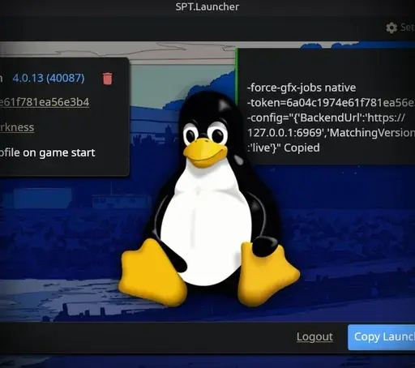

SPT Launcher Linux
- Downloads
- 296
- Favourites
- 3
Tested on SPT 4.0.13 but should probably be fine from 4.0.0 up.
A Linux build/fork of the original SPT.Launcher
This Linux “Launcher” ironically won’t actually start your game. It is more like an account manager for your SPT (or Fika) accounts.
It is identical to the official one with the only difference being that instead of having a “Start Game” button it has a “Copy Launch Arguments” one. You will paste those arguments in your preferred launcher (Lutris/Heroic/Steam) and run your game with Proton.
THIS IS ONLY THE LAUNCHER, NOT THE PATCHER OR INSTALLER!!! To install SPT I recommend using a Windows virtual machine - MY GUIDE.
DISCLAIMER: You don’t have to put this inside your game folder to use it but if you still wish to do that, it will overwrite the original launcher’s locale files, Assembly-CSharp.dll.delta and LICENSE-Launcher.txt(license is the same as the original). Doing so should not cause you trouble but I recommend just keeping it outside.
Requirements
- ASP.NET 9 Core Runtime (how to install?)
- Check if you have it available in your package manager
- (Linux Mint 22.3) I had to add it manually with an ubuntu PPA
-
sudo add-apt-repository ppa:dotnet/backports -
sudo apt-get update && sudo apt-get install -y aspnetcore-runtime-9.0
- An SPT install
- A third-party launcher to start your game with (Lutris/Heroic/Steam)
- A runner (Proton/ProtonGE) to emulate the game with
How to use
- Start the SPT server. SPT has a native Linux server included
SPT/SPT.Server.Linux(requires .NET 9 runtime). Mark it as executable and launch it through Terminal to see it - Start
SPT.Launcher.Linux - Create/login to an account
- Press “Copy Launch Arguments”
- Paste them into the launch arguments dialog inside your launcher of choice (Lutris/Heroic/Steam)
- To change the account playing you just select the account you want and copy-paste the launch arguments again
What the launch arguments mean
These are what the launcher on Windows is starting your game with. On Linux you’ll be doing this manually because of emulation/proton setup.
- This always gets passed by the launcher, it should improve multi-core performance
-force-gfx-jobs native - The account you’ll log in with
-token=accountnumber - The server you’re connecting to (by default this should be the same)
-config="{'BackendUrl':'https://127.0.0.1:6969','MatchingVersion':'live','Version':'live'}"
Example: -force-gfx-jobs native -token=69fea3e381250c03c4e6f36a -config="{'BackendUrl':'https://127.0.0.1:6969','MatchingVersion':'live','Version':'live'}"
Thank you to the SPT developers and maintainers <3
Thank you for creating and maintaining the SPT project. The modding community is lovely and the open source culture is awesome!
I’ve tried my best to keep this fork’s changes separate from the original code so that it would be easy to merge. Feel free to contact me if you need assistance merging this with your official repo :)
Version
4.0.13
The first version of the Linux build.